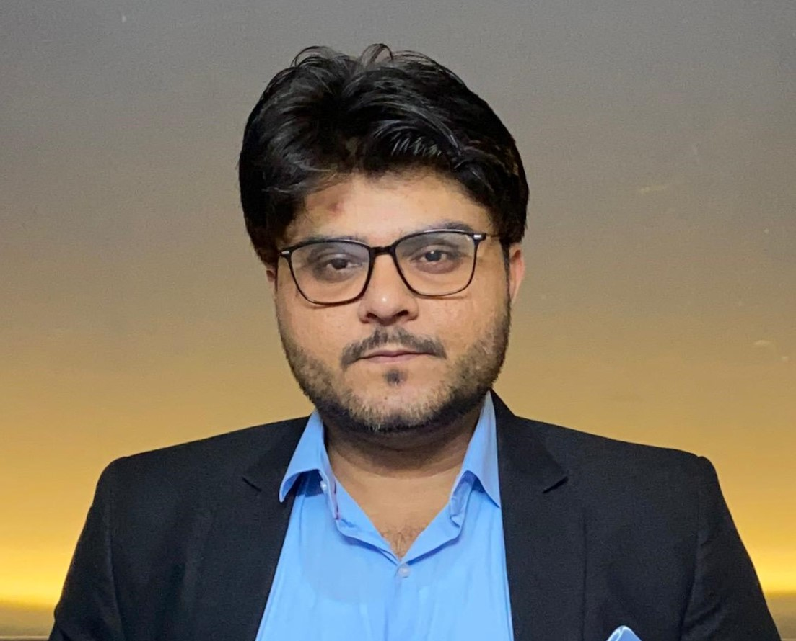

Ghulam Murtaza Dahar

Mobile: 03340279871
email : gmkhandahar@gmail.com
Summary
Result-oriented software engineer with a strong educational background in software engineering and hands-on experience in full stack development.
Skilled in a wide range of programming languages, frameworks, and tools, with a keen interest in leveraging emerging technologies to create innovative solutions.
Recognized as a cultural ambassador of Pakistan by the United States Department of State, demonstrating strong interpersonal and cross-cultural communication skills.
Education
- Bachelor of Science in Software Engineering
Mississippi State University, USA
- Bachelor of Engineering in Software Engineering
NED University Karachi, Pakistan, 2017
Work Experience
Software Engineer
Inseyab Consulting & Information Solutions, Karachi
2017
- Developed web applications using Microsoft MVC framework.
- Transitioned to data analytics projects utilizing MicroStrategy (MSTR) and Power BI.
- Participated in projects involving data analysis and visualization, gaining exposure to data science concepts.
Career Break
May 2017 - October 2023
- Took time off to pursue the CSS Exam, but chose computer science as an optional subject to keep theoretical knowledge up-to-date.
Professional Development
- Full Stack Development Bootcamp, London App Brewery
October 2023 - Present
- Completed comprehensive training covering HTML5, CSS (including Advanced CSS, Flexbox, Grid), Bootstrap, JavaScript, DOM manipulation, Unix command line, Node.js, Express.js, EJS, Git, GitHub, APIs, databases (SQL, PostgreSQL), authentication and security, React.js, Web3 decentralized app development, ICP Live Blockchain, Dapps development with React frontend, crypto token creation, NFT minting, and NFT marketplace development.
Skills
- Familiarity with web development technologies such as HTML, CSS, JavaScript, React.js
- Experience with database management systems including SQL Server, MySQL, PostgreSQL
Awards and Certificates
- Manager for Pakistan’s Mega IT Event, NED University Karachi, 2013
- TOEFL ITP Qualified, Score: 533, May 2015
- Cultural Ambassador of Pakistan, U.S Department of State, 2016
- GRE Exam Qualified, 2017
- Full Stack Development Certification, London App Brewery, 2024
Projects
This section will soon be updated with relevant links.
Other
Hobbies
Contact